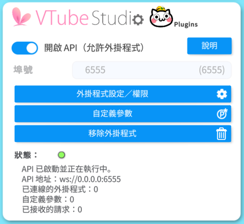
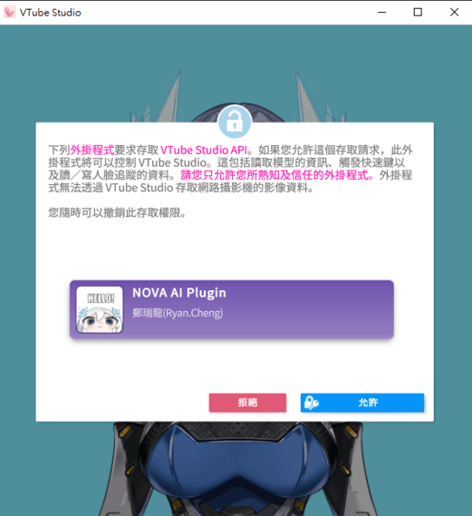
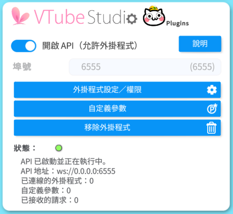
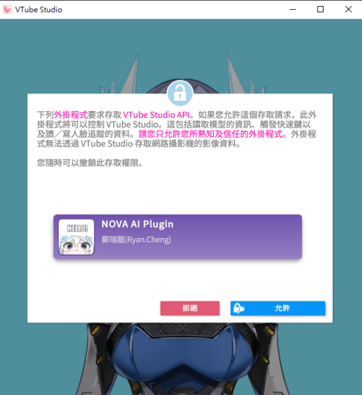

打開並啟動 VTube Studio 應用程式。
進入 VTube Studio 的 API 設置欄，輸入 API 密鑰 8051，並點擊 “確認 API 調用” 按鈕。

2. 配置 NOVA CHAT 應用程式
點擊 "設定" 按鈕，Vtube Studio 會提示是否同意掛載第三方應用程式，確認即可。


打開並啟動 VTube Studio 應用程式。
進入 VTube Studio 的 API 設置欄，輸入 API 密鑰 8051，並點擊 “確認 API 調用” 按鈕。

點擊 "設定" 按鈕，Vtube Studio 會提示是否同意掛載第三方應用程式，確認即可。

連接 YouTube 直播間: 輸入 YouTube 直播間的連結，NOVA CHAT 會自動抓取聊天室內容。